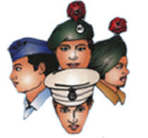
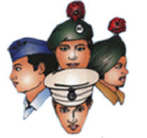
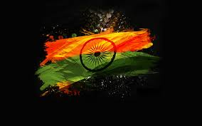

NATIONAL CADET CORPS

NATIONAL CADET CORPS
 The Nation cadet Corp(N.C.C) is the organization, which is regulated under the Ministry of Defence. It act as the body to provide the basic military training that inculcate the feeling of comradeship, courage, honesty and above all the patriotism.
It came into force in 1948 with a view to impart the rudimentary skills and training in handling of weapons of different type, and make them physically tough such that they could face the hardship easily. N.C.C training is given to student in age group of 13 to 26 in the school and college.It is given in army, naval, and air force stream depending upon the aptitude of students.
The Nation cadet Corp(N.C.C) is the organization, which is regulated under the Ministry of Defence. It act as the body to provide the basic military training that inculcate the feeling of comradeship, courage, honesty and above all the patriotism.
It came into force in 1948 with a view to impart the rudimentary skills and training in handling of weapons of different type, and make them physically tough such that they could face the hardship easily. N.C.C training is given to student in age group of 13 to 26 in the school and college.It is given in army, naval, and air force stream depending upon the aptitude of students.
NCC HISTORY
* The NCC in India was formed with the National Cadet Corps Act of 1948.
* It was raised on 15 July 1948 The National Cadet Corps can be considered as a successor of the University Officers Training Corps (UOTC) which was established by the British in 1942.During World War II, the UOTC never came up to the expectations set by the British. This led to the idea that some better schemes should be formed, which could train more young men in a better way, even during peace times. A committee headed by Pandit H.N. Kunzru recommended a cadet organization to be established in schools and colleges at a national level. The National Cadet Corps Act was accepted by the Governor General and on 15 July 1948 the National Cadet Corps came into existence.
* During the 1965 and 1971 wars with Pakistan, NCC cadets were the second line of defence. They organised camps to assist the ordinance factories, supplying arms and ammunition to the front, and also were used as patrol parties to capture the enemy paratroopers.
* The NCC cadets also worked hand in hand with the Civil Defence authorities and actively took part in rescue work and traffic control.
* After the 1965 and 1971 Indo-Pak wars the NCC syllabus was revised. Rather than just being the second line of defence, NCC syllabus laid a greater stress on developing qualities of leadership and Officer-like qualities. The military training which the NCC cadets received was reduced and greater importance was given to other areas like social service and youth-management.

gallery
Advantages Of Joining NCC
- NCC is a highly reputed body which is also a second line of defence. In India, many youngsters are trained in line with defence in case the need arises. If young students want to make it their career option, then being a NCC cadet holds a lot of weight. As they are directly associated with the ministry of defence.
- Other than just military training the cadets also learn several other valuable things such as selflessness, honesty, discipline, hard work and ways to build confidence and gain leadership qualities.
- NCC cadets learn to take pride in them and the training also strengthens the spirit of being an Indian. This helps them gear towards joining the forces and providing their 100% when the country is in need of them.
- Other than SSB they also get a preference over other in the CRF and BSF.
- Other than just armed forces there are several central and state Government organisations who give special preference to NCC cadets.
some motivational videos